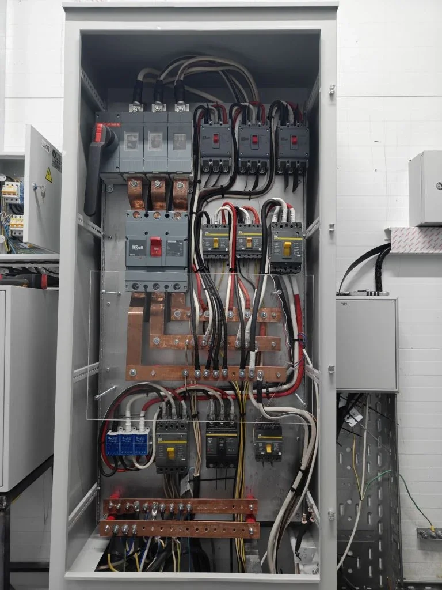

Офисы и коммерция
Электромонтаж офиса под ключ в Екатеринбурге: что входит и как подготовиться к расчету
Офисная электрика должна выдерживать рабочие места, освещение, оргтехнику, серверную зону, кондиционеры и дальнейшие изменения планировки. Поэтому перед монтажом важно считать не только количество розеток, но и всю систему питания.

Когда офису нужен электромонтаж под ключ
Полноценный электромонтаж нужен, если помещение готовится к открытию, переезду, ремонту или перепланировке. В таких задачах обычно меняется расположение рабочих мест, добавляется освещение, техника, сетевое оборудование, кондиционирование и отдельные линии для важных потребителей.
Точечная замена одной розетки редко решает задачу бизнеса. Если офис должен нормально работать каждый день, лучше сразу продумать щит, кабельные трассы, запас линий, маркировку и доступ для обслуживания.
Что входит в работы
- Осмотр помещения, сбор вводных и проверка существующего щита.
- Разделение нагрузок на группы: рабочие места, освещение, кухня, серверная зона, кондиционеры, принтеры и оборудование.
- Прокладка кабельных линий в лотках, за потолком, в перегородках или по согласованным трассам.
- Сборка или доработка распределительного щита под реальные нагрузки офиса.
- Монтаж розеточных групп, выключателей, линий освещения и силовых точек.
- Маркировка линий, проверка подключений и подготовка к эксплуатации.
Что важно предусмотреть заранее
В офисе часто недооценивают нагрузку рабочих мест. Один стол может потреблять немного, но десять или двадцать рабочих мест, принтеры, кофейная зона, кондиционеры и серверное оборудование уже требуют нормального распределения по группам.
Отдельно стоит предусмотреть слаботочные трассы, место для сетевого оборудования, резервные линии, удобство будущих перестановок и понятную маркировку. Это снижает риск переделок, когда офис уже работает.
Что влияет на стоимость
На стоимость влияют площадь офиса, количество рабочих мест, состояние существующей электрики, высота потолков, способ прокладки кабеля, количество групп в щите, наличие серверной зоны, кондиционеров, кухни и требований арендодателя.
Если помещение находится в бизнес-центре, нужно учитывать правила доступа, время шумных работ, требования управляющей компании и возможность работать поэтапно без срыва сроков ремонта.
Что прислать для предварительного расчета
Для первой оценки достаточно плана помещения, количества рабочих мест, фото текущего щита, списка оборудования и желаемых сроков. Если есть проект, требования арендодателя или схема расстановки мебели, их лучше приложить сразу.
Если проекта нет, можно начать с короткого описания: площадь офиса, количество сотрудников, что нужно подключить, где находится объект и когда нужно начать работы.
Нужно рассчитать электромонтаж офиса?
Пришлите план, фото щита, количество рабочих мест и список оборудования. Подскажем, каких данных достаточно для предварительной оценки.
Оставить заявку